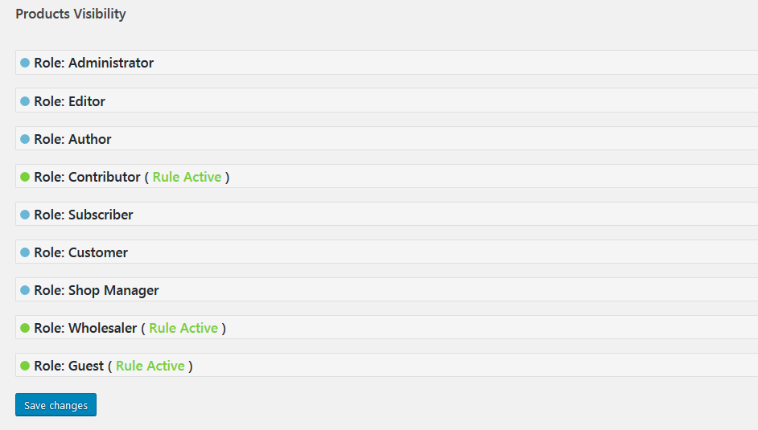

Thank you for purchasing our plugin.
If you have any questions that are beyond the scope of this help file, please leave a message at the plugin's comment section at codecanyon.
Don't forget to rate the plugin if you like it.
Thank you so much!
Overview
With WooCommerce Products Visibility plugin you can decide which products will be visible site-wide for each user role.
Minimum requirements
- PHP 5.4
- WordPress 4.4
- WooCommerce 2.3
- JavaScript / jQuery
Features
- Hide or show specific products for each user role
- Hide or show products based on tag for each user role
- Hide or show products based on category for each user role
- Combine product, tag or category rules for each user role
- Hide products, categories and tags both at the same time for particular role
- Hide products, categories and tags from menus, widgets and cart
- Compatible with custom user roles
- Compatible with multiple user roles
- Show products through direct URL option
- Default logged user role for bulk actions
- Reset all rules button
- Toggle role visibility on backend to avoid clutter
- Quick-view which user roles have visibility rules at a glance
- Object Oriented Code
- WPML Compatible
- Multilingual Ready: .pot file included, for easy translation (RU, UA contributed by users)
Installation
There are two primary methods for installing any WordPress plugin.
Install with a zip file
-
From your WordPress dashboard, choose
Plugins > Add New -
Select
Uploadfrom the set of links at the top of the page (the second link) -
From here, browse for the zip file included in your plugin purchase titled woocommerce-products-visibility.zip and click the
Install Nowbutton -
Once installation is complete, click
Activate Pluginto activate it and enable its features.
Install by FTP Manager
If you are have no previous web experience and have no idea what an FTP Manager is, then this option is not for you.
- Access your host through the FTP manager
- Access the plugins directory of your WordPress install
/(WordPress directory)/wp-content/plugins/If WordPress is installed on the root folder the directory is
/wp-content/plugins/ - Find the directory titled woocommerce-products-visibility.zip and upload it and all files within to the directory from the previous step.
- From your WordPress dashboard, choose
Plugins > Installed Plugins - Locate the newly added plugin and click on the
Activatelink to enable its features.
Quick Start Guide
Step 1
When you activate the plugin, there's an options page added under the 'WooCommerce' -> 'Settings' -> 'Products' section. At the top of that page you will see (between other links) 'Products Visibility'. Go to this page to configure the plugin.
Step 2
Next, click any of the user roles to start adding rules.
The last role, guest, refers to all users that are not logged in.
If you want to add more user roles, you can download, install and activate the User Role Editor plugin.
Step 3
By clicking the role, a sub-part will unfold. You can now add your desired rules to the selected user role.
You can see 3 sections for each user role: products, tags and categories.
- In the products section, you can select which products will be visible or hidden for the select role.
- In the tags section, you can select which products will be visible or hidden for the select role, based on their tag.
- In the categories section, you can select which products will be visible or hidden for the select role, based on their category.
You can also simultaneously combine rules. In that case, bear in mind that:
- The 1st rule that refers to the products, has top priority. This means that it will override the 2 consequent rules (tag and categories).
- The 2nd rule that refers to the tags, has middle priority and will override the categories rule.
- The 3rd rule has the lowest priority.
For more examples, you can see the manual section Use Cases.
Step 4
After having selected the desired rules for each user role, press Save Changes at the bottom to apply changes.
For your convenience, user roles that have at least one rule active, will be highlighted. This way, you can quick-view which user roles have visibility rules at a glance!
Step 5
You can now go to your front-end, logged in as the desired user to confirm that you have applied the correct rules.
The Default Logged User
The Default Logged User role is a helper role that helps you add bulk rules to the logged-in roles. This means that if you add a rule to this role, all the other roles (eg. administrator, editor, shop manager, etc.), except for guest, will inherit these rules.
The Cancel Hide radio button
When you add a rule to the default user role, a new radio button will appear for all the other roles (except for guest): the cancel hide button. By using this button, you can cancel some of the rules that you may have added in the default user role for the desired roles.
The cancel hide button will show, only if you have set a rule to the default user role.
A practical example
For example, let's say that you want to hide a specific category, let's say albums, from all users (logged and guests). But at the same time, you want to show this category to a specific role, let's the say wholesale role.
To do so you can follow these easy steps:
- Hide the albums category for the default logged users.
- Hide the albums category for guest users.
- Cancel hide the albums category for the wholesale users.
The Reset Button
If you want to erase all your rules simultaneously, you can press the reset button on the bottom right corner. Since this action is irreversible, a confirmation box will appear and ask you to verify your action. The reset action also remove all the role priorities to their default values (50).
Use Cases
For demonstration purposes, let's say that we want to add some visibility rules for guest users and that we have the following 6 products with their corresponding tags and categories:
| Product | Tag | Category |
|---|---|---|
| Trouser 1 | Winter | Trousers |
| Trouser 2 | Summer | Trousers |
| Shoe 1 | Spring | Shoes |
| Shoe 2 | Winter | Shoes |
| Dress 1 | Summer | Dresses |
| Dress 2 | Spring | Dresses |
For each case, you will see:
- An image preview of the backend settings to achieve the case's desired result.
- A table that describes which of the products will be visible and which not.
Case 1:
Hide dresses category
| Product | Tag | Category | Visible |
|---|---|---|---|
| Trouser 1 | Winter | Trousers | True |
| Trouser 2 | Summer | Trousers | True |
| Shoe 1 | Spring | Shoes | True |
| Shoe 2 | Winter | Shoes | True |
| Dress 1 | Summer | Dresses | False |
| Dress 2 | Spring | Dresses | False |
Case 2:
Show only winter tag

| Product | Tag | Category | Visible |
|---|---|---|---|
| Trouser 1 | Winter | Trousers | True |
| Trouser 2 | Summer | Trousers | False |
| Shoe 1 | Spring | Shoes | False |
| Shoe 2 | Winter | Shoes | True |
| Dress 1 | Summer | Dresses | False |
| Dress 2 | Spring | Dresses | False |
Case 3:
Hide all products from category shoes, except for shoe 1
| Product | Tag | Category | Visible |
|---|---|---|---|
| Trouser 1 | Winter | Trousers | True |
| Trouser 2 | Summer | Trousers | True |
| Shoe 1 | Spring | Shoes | True |
| Shoe 2 | Winter | Shoes | False |
| Dress 1 | Summer | Dresses | True |
| Dress 2 | Spring | Dresses | True |
Case 4:
Show only shoes and dresses, except for shoe 1 and products that have summer tag
| Product | Tag | Category | Visible |
|---|---|---|---|
| Trouser 1 | Winter | Trousers | False |
| Trouser 2 | Summer | Trousers | False |
| Shoe 1 | Spring | Shoes | False |
| Shoe 2 | Winter | Shoes | True |
| Dress 1 | Summer | Dresses | False |
| Dress 2 | Spring | Dresses | True |
Case 5:
Hide summer tag and trousers category, but show dress 1 and trouser 2
| Product | Tag | Category | Visible |
|---|---|---|---|
| Trouser 1 | Winter | Trousers | False |
| Trouser 2 | Summer | Trousers | True |
| Shoe 1 | Spring | Shoes | True |
| Shoe 2 | Winter | Shoes | True |
| Dress 1 | Summer | Dresses | True |
| Dress 2 | Spring | Dresses | True |
Show Products Through Direct URL
If for some reason, want to hide your products, but be able to send a direct url to your users, in order for them to see the hidden products, you can do so easily. Just just tick the enable radio button right next to the and press Show Products Through Direct URL option and Save changes

Multiple Roles per User Compatibility
The plugin is compatible with multiple roles per user.
If you want to add multiple user roles per user, you can download, install and activate the Multiple Roles plugin.
To enable the multiple roles compatibility, just tick the enable radio button and press Save changes.
The Role Priority field
When you enable the multiple roles compatibility, then a new field will appear for each role: the Role Priority field.
The Role Priority field is an integer number (1 or greater) that indicates which role rules will be applied first. Bear in mind, that the default logged user has a top priority of -1.
To understand role priorities, let's say that a user has 2 different roles at the same time: the editor and the author. If the editor role has a default priority of 50 and the author role a priority of 51, this means that the editor rules will be applied first.
The Role Priority field will show, only if you have enabled the Multiple User Roles Compatibility.
A practical example
Let's say that you add the following rules:
- Hide posters for editors
- Hide albums for customers
The result will be the following:
- The editors will not see the posters
- The customers will not see the albums
- Users that have the editor and customer role at the same time, will not see the posters and the albums
The Cancel Hide Radio Button
If you add multiple roles to at least one user, then a new radio button will appear for each role: the Cancel hide button.
You can use the cancel hide rule to reset a hide rule that belongs to a higher priority role.
In order to use the cancel hide button, the user role to which you will apply it must have a higher number (lower priority) than the role to which you have set the hide rule.
A practical example
For example, let's say that you have a user that has 2 user roles at the same time, the editor and the customer. In order to hide all posters from editors, but show it for customers you can do follow these steps:
- Hide the albums category for editors.
- Set a 51 priority for customers (the editors have a default 50 priority).
- Cancel hide the albums category for customers.
Cancel Hide and Show combination
When you add a show rule to a product, tag or category, it helps if you interpret this rule as a hide all others rule. For example, if you have 4 products, and you add a show rule for products 1 and for, this means that the other products, 3 and 4, will be hidden.
A practical example
Let's say that you add the following rules:
- Show only products 1 and 2 for editors with a role priority of 50
- Cancel hide product 3 for customers with a role priority of 51
The result will be the following:
- The editors will see products 1 and 2 (since all other products will be hidden)
- Users that have the editor and customer role at the same time, will see products 1, 2 and 3
WPML Compatibility
The plugin is WPML compatible. This means, that every rule that you create will also apply for the available translations.
The plugin's backend options are only available for the site's default language.
Make sure that all of your products, tags and categories on your default language, have been translated.
Changelog
27.04.2018 version 2.7
- Add - Multiple user role wcpv_mur_intersect_include filter
20.02.2018 version 2.6
- Add - General helper filters
02.02.2018 version 2.5
- Add - Helper filter for multi-category products
02.09.2017 version 2.4
- Add - Show products through direct URL option
14.05.2017 version 2.3
- Fix - Relevanssi search plugin compatibility fix
- Fix - Live ajax search fix
20.04.2017 version 2.2
- Fix - Performance optimization
01.04.2017 version 2.1
- Add - Compatibility with WooCommerce 3.0
01.03.2017 version 2.0
- Add - Multiple user roles per user compatibility
- Add - Default logged user role added for bulk actions
- Add - Hide hidden products from cart
- Add - Reset all rules button
- Fix - Performance optimization
- Language - Fix Russian and Ukrainian translations
24.01.2017 version 1.4
- Fix - Do not hide irrelevant products from menus and widgets
- Fix - Performance optimization
13.01.2017 version 1.3
- Add - Hide hidden products from menus
- Fix - Do not hide post categories
12.01.2017 version 1.2
- Add - Hide hidden categories and tags from menus
- Add - Hide hidden categories from WooCommerce Product Categories widget
- Add - Fix categories counting in WooCommerce Product Categories widget
- Add - Hide hidden tags from Product Tags widget
- Language - Plugin localization
- Language - Add Russian and Ukrainian translations
29.12.2016 version 1.1
- Fix - WPML problem with categories and tags
26.10.2016 version 1.0
- Initial release